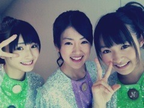

| 2012/07 30 Mon | 191回目*marika |
いつも読んでくださってる方、
初めて読んでくださった方、
コメントしてくださった方、
ありがとうございます。
乃木どこキャンプロケ第二弾
料理対決！
赤チームの食材は牛乳とバター
女子力......

リーダーさゆりんの暴走から
赤チームの結束力があああ
私はTKOさんには
天才かめっちゃアホかどっちかだ
とツッコまれてしまいました><ぐは
そんでTVに映ってる自分が
ひどすぎて...反省してます。
れいかのマネ似てたよね⁈
本人はしゃべり方
変えていじわるしたけど

メインの料理をちゃんと
作ったことないんですよ。
お菓子は作ったことあるけど...
あと、野菜をきれいに
切ることくらいなら...
こげこげクリームシチューどんぶり
なんかよくわからんやきそば
(カルボナーラ風)
ぐちゃぐちゃフレンチトースト
せっかくなのでテーマである食材を
入れようと思って牛乳を入れました。
...
でもね！
唯一おいかったのがあったんです...！
や き い も ！ ！
やきいもは上手く言って
3人で感動してた。
ま、りっか

...で済む話...かな！！！！
**********
 万理華ちゃんはコメントを
万理華ちゃんはコメントを
パソコンか携帯どっちで見てる！？
 携帯ぎ多いかな！
万理華はいつ頃
携帯ぎ多いかな！
万理華はいつ頃
スマホにした_(?._.?)_
乃木坂に入ってからだよ～
まりっかのクセは！？
アゴに手をおいちゃう
両手で首をおさえちゃう...
見る度にステキになってる
けど何かしてるの？
すてきじゃないよー><
料理ダメダメだったし...
特になんもしてないよ！
あの3人の中で誰が
1番料理が出来るん？？
おそらく...いないかな
 乃木坂入ってなかったら
乃木坂入ってなかったら
何目指してた？
ファッションデザイナーかな
万理華に会いたいんだけど！
9月まで会えないね( ・´ｰ・｀)
熱でる！どうしよ！笑
熱⁇‼大変大変

握手会は8月にないもんね><
でも会えない時間が長い分
久しぶりに会ったときの嬉しさが
大きくなるかも...！
もし自分が男の子だったら
どんな女の子がタイプですか(笑)
あら

へろへろってしてて楽しそうな人♪
ツッコミいれてくれる人...！
1時間の番組枠をあげるから
どんな事してもいいよ！自由に！
って言われたら
どんな企画をやってみたいですか？
からだはったやつ！
まりかはカレー何辛派？
もちろん甘口？
甘口すきー
こどもとか言うなぁー><
**********
♪音の出ないギターMV
撮影とても楽しかったです！
みんなノリノリだった

この制服1st個人pvの衣装と似てる＊
ロックな雰囲気にあえて
この私立ぽいお嬢様な制服、
ミスマッチな感じがすごくすき


*****

名古屋のとき♪
今日の乃木坂浪漫は私です！
夏目漱石「それから」
チェックしてね^^
まりか
コメント(149)
2012/07/30 14:48